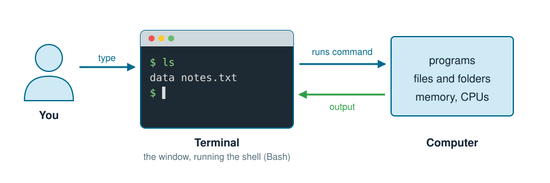
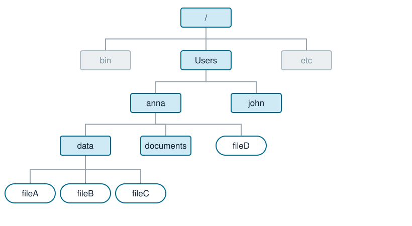
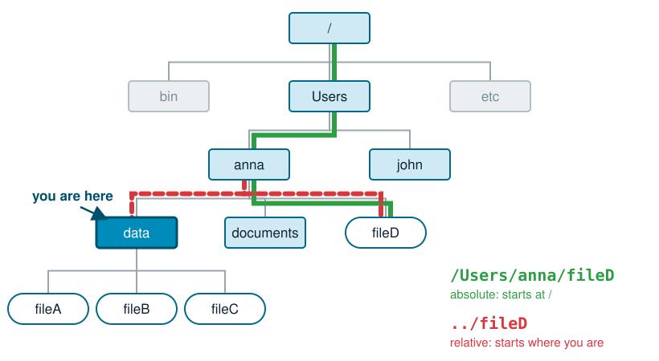

Introduction to the command line
Introduction to Bioinformatics
Amrei Binzer-Panchal
This lecture
- What is a shell, and why use it?
- Files and folders: the directory tree
- Paths: where am I, where is my file?
- The command syntax
- Today’s commands
- Wildcards, redirection and pipes
- Next: the server
Adapted from Introduction to UNIX by Renaud Van Damme (SLU).
What is a shell?
Make your computer understand
Graphical interface
- click on folders and files
- easy to start with
- hard to repeat: 100 files means 100 clicks
Command line (shell)
- type a command, read the answer
- takes some learning
- one command can handle 100 files, and you can save it in a script
You can mix and match these on the same files and folders.
The shell

- The terminal is the window; the shell is the program inside it that reads your commands.
- We use Bash, the shell on most Linux servers. macOS uses zsh by default, which works almost the same.
Bioinformaticians use it
- Almost all servers and clusters run Linux, and you reach them only through a shell.
- Most bioinformatics tools have no graphical interface: they are commands.
- Files are huge: you cannot open a 10 GB FASTQ file in a word processor.
- Commands can be saved in scripts: your analysis becomes repeatable and documented.
Files and folders
The directory tree

- Folders (also called directories) contain files and other folders.
- Everything starts at the root, written
/.
Your home folder
Each user has a home folder. This is the default location when the shell is started. It can be accessed by ~.
| Where | Your home folder |
|---|---|
| macOS | /Users/anna |
| Git Bash on Windows | /c/Users/anna |
| Linux, WSL | /home/anna |
| HPC2N server | /home/a/anna |
Your Desktop is ~/Desktop: today’s data will be in ~/Desktop/shell-lesson-data.
Paths
Where am I?
- At every moment the shell is “in” one folder: the working directory.
pwd(print working directory) tells you which one.- Commands look for files relative to where you are, unless you say otherwise.
Absolute and relative paths

- Absolute path: starts at
/, works from anywhere. - Relative path: starts where you are.
..is the folder above,.is the folder you are in.
Moving around with cd
| From | To | Command |
|---|---|---|
| anywhere | home | cd |
| anna | data | cd data |
| data | anna | cd .. |
| data | documents | cd ../documents |
| anywhere | Users | cd /Users |
Lost? pwd tells you where you are, ls shows what is there.
Tips for paths
- Press Tab (
->|) to complete file and folder names. This way, you will have fewer typos. If nothing completes, the file is not where you think it is, or is called differently. - Avoid spaces in names:
my data.txtis read as two files. Usemy_data.txt. - Remember: upper and lower case are different:
Datais notdata.
Commands
What a command looks like
| Part | Here | Meaning |
|---|---|---|
| command | ls |
the program to run |
| options | -l -h |
change what it does; usually start with - |
| arguments | Desktop/shell-lesson-data |
what to work on: often a path |
In the material, $ stands for the prompt: do not type it.
Getting help
explainshell.com explains any command you paste into it.
Commands for today
| Command | Does | Example |
|---|---|---|
pwd |
show where you are | pwd |
ls |
list a folder | ls -F data |
cd |
change folder | cd .. |
mkdir |
make a folder | mkdir results |
touch |
make an empty file | touch notes.txt |
cp |
copy | cp a.txt b.txt |
mv |
move or rename | mv b.txt results/ |
rm |
delete, for good | rm results/b.txt |
Reading and writing files
Read
cat file: print the whole filehead file: the first 10 linesless file: scroll through, quit with qwc -l file: count lines
Write: nano file
- a simple text editor inside the terminal
- Ctrl + O: save
- Ctrl + X: exit
- the shortcuts are listed at the bottom of the window
Remove files and directories
Usage: rm test.txt
rmdeletes immediately and permanently. The command line does not have a bin.rm -r folderdeletes a folder and everything in it.- Use
rm -ito be asked before each file.
Wildcards, redirection and pipes
Wildcards: operate on several files
Example folders:
out1 out2 out3 out.4 in.f in.o
| Pattern | Matches |
|---|---|
* |
all files |
out* |
out1 out2 out3 out.4 |
out? |
out1 out2 out3 (exactly one character) |
*.f |
in.f |
Saving and redirecting
| Does | Example | |
|---|---|---|
> |
save output to a file (overwrites!) | ls > files.txt |
>> |
add output to the end of a file | ls >> files.txt |
| |
send output into the next command | ls | wc -l |
Today
- Exercises: Software Carpentry The Unix Shell, episodes 1 to 4; bonus episode 6
- Discussion
- Lab quiz in Canvas

The command line · Introduction to Bioinformatics